机制
机制是指游戏核心部分的规则、流程以及数据。本页面描述Arcaea的机制。
本游戏中同一曲目通常拥有不同难度的谱面以适应不同水平的玩家，现存的谱面难度共有5个：Past、Present、Future、Eternal、Beyond，常规曲目都具有Past、Present、Future难度，部分曲目额外具有Eternal或Beyond难度[1]，后文将二者称为附加难度。难度描述中对于各物件的具体介绍详见物件类型。

Past
简称PST，其中多数谱面为新手准备。
- 目前该难度下的谱面等级范围为1~7+（定数范围1.0~7.8）。
- PST难度谱面特征：
- 音弧到来之前有着较大的提示标记。
- 音弧只能在天空判定线（Sky Input）上左右移动。
- 通常不会出现黑线和天键[2]。

Present
简称PRS，其中多数谱面为正在熟悉玩法的玩家准备。
- 目前该难度下的谱面等级范围为3~9（定数范围3.5~9.6）。
- PRS难度谱面特征：
- 相对于PST可以出现黑线和天键。
- 音弧和天键可以在梯形界（判定平面中上窄下宽的一个区域）内任意移动或出现，且音弧上下移动时会出现提示：蓝音弧的提示会出现在左上方，红音弧的提示会出现在右上方。

Future
简称FTR，其中多数谱面为已有一定实力的玩家准备。
- 目前FTR难度下的谱面等级范围为7~11（定数范围7.0~11.3）[3]。
- FTR难度谱面特征：
- 相对于PRS去除了音弧上下移动的提示。
- 大多数谱面的音弧和天键不会超出梯形界[4]。

Eternal
简称ETR，其中多数谱面为具有较高实力的玩家准备。
- 于v5.4.0版本更新时实装，目前ETR难度下的谱面等级范围为8~11（定数范围为8.5~11.5）
- ETR难度谱面特征：
- 相较于FTR，音弧、黑线与天键超出梯形界的现象更为常见。

Beyond
简称BYD，其谱面为爱好挑战的玩家准备。
- 于v3.0.0版本更新时实装，目前该难度下的谱面等级范围为9~12（定数范围9.0~12.0）。
- BYD难度谱面特征：
- 相较于ETR，音弧、黑线与天键超出梯形界的现象更为频繁，且运动幅度不受显示区域限制。
- 部分音弧、部分天键不具有黑线引导。
- 谱面中的物件发生重合的现象更为常见，例如音弧的开头附着天键/地键、音弧与长条共用判定[5]。
- BYD难度具有显著区别于其它难度的特征：
- 大量曲目的BYD难度具有不同于其它难度的专属曲绘（一般为后期更新追加BYD难度的曲目，除Tempestissimo和Last），极少数曲目的BYD难度甚至采用了不同的音源[6]。
- BYD难度谱面解锁的前置条件通常不同于上述四个难度。
- 大部分BYD难度谱面在解锁前隐藏，需要前往世界模式失落章或陷落章游玩对应的地图单独解锁，或者达成特定条件后解锁[7]。
- 当玩家选中未解锁但存在BYD难度的曲目时，难度列表中附加难度位置通常会显示为空槽位提示其存在BYD难度谱面[8]。
其他说明
- 通常情况下，一首曲目在同一难度仅存在一个谱面，例外：
- Last存在两个BYD难度谱面，二者通过切换搭档技能进行切换显示。
- 通常情况下，一首曲目不同难度对应的谱面难度等级与定数沿PST-PRS-FTR-ETR/BYD逐渐增大，例外：
- dropdead的PRS与FTR难度谱面。
- Singularity的FTR与BYD难度谱面。
- 当前版本中，ETR与BYD这类附加难度按钮均位于即第四个难度槽位（即FTR右侧）[9]。
- 当一个曲目列表中同时包含ETR与BYD两种难度时，附加难度槽位左上角会出现切换图标，表示点击该位置可切换至另一个难度列表。
- 若选中不具有或未解锁附加难度的曲目后点击附加难度位置（即FTR右侧空白位或空槽位），则会优先跳转至BYD难度列表，若BYD列表无曲目则会跳转至ETR难度列表。
- 其他相关内容参见界面#选曲界面
1.地面物件：包括地面音符（Tap）和长音符（Hold）两种。
-
地面音符（Tap）：俗称"地键"，是最普通的地面物件，仅会出现在地面轨道中，在其到达地面判定线时点击即可。
- 部分谱面的地面轨道有时会由四轨道变为六轨道[10]。
- 判定时间标准为note的底端（而不是中部）接触判定线的时间。
-
长音符（Hold）：俗称"长条"，是需要长按的地面物件，仅会出现在地面轨道中，当其首端到达地面判定线时，需要点中并按住，直至其尾端。长条没有尾判，在结束时可不松开。
- 长条的判定与单键有略微的不同，有些谱师会用1物量长条代替单键增加难度，例如Arcahv [FTR]、Lightning Screw [FTR]以及Designant. [BYD]。
- 长条看似需要一直按住，但是实际上是由数个判定区域结合而成，换句话说，在足够频繁的情况下快速点击长条并不会出现Lost。
-
地面物件的判定：
- 判定区域位于地面判定线与天空判定线（Sky Input）中点至屏幕底部，玩家在这个区域内的任意位置均可对地面物件进行判定。
- 手指击中轨道区域时，对应的轨道会改变颜色。
- 超出轨道的手指会被视为在最近的轨道上。
- 在Arcaea 4.0.0以后的版本中，由于6K轨道的出现，为了优化手感减少误触，增加了新的邻轨判定机制。此机制根据enwidencamera触发时Sky Input的高度来决定补正范围，最大可以允许左边界外0.5倍轨道宽度/右边界外0.5倍轨道宽度的区域被判定
2.天空物件：包含音弧（Arc）、音轨（Trace）和天空音符（Arctap）
-
音弧（Arc）：是出现在空中的弯曲的红色或蓝色蛇状物，俗称"蛇"。需要在其首端到达判定平面时按住，手指随其的扭动而扭动，直至其尾端。音弧没有首判和尾判，可以提前按住，且在结束时可不松开。
- 高度发生变化的音弧会在其开头出现一段竖线。
- PST难度谱面中没有出现过上下移动的音弧，PRS难度谱面中音弧上下移动时会在轨道左上或右上出现提示。
- 音弧的首端通常出现在判定区域的左上角和右上角，出现在其他位置时通常会有音轨引导[11]。
-
音轨（Trace）在技术上是音弧的一种特殊形式，俗称"黑线"。单纯的音轨无需点击，但在音轨上可能会出现需要点击的天空音符(Arctap)。
- 在曲目Red and Blue and Green和0xe0e1ccull的愚人节谱面(也即FTR难度谱面)以及Your Best Nightmare的BYD难度谱面中，出现了绿音弧。
-
判定原则 （此部分内容基于游戏内表现推断得出，非官方确认内容）
- 基本原则：音弧在成功判定时计为大Pure，判定频率依谱面的不同而不同；未得到成功判定（而不是得到错误判定）达到一定时间后会计为Lost，具体时间依谱面的不同而不同。音弧在得到成功判定时将被点亮，得到错误判定时将变为鲜红色，大部分音弧会在未得到判定时将变淡。
-
判定依据：
- 手指接触屏幕时获得"触点"，并且在对应手指离开屏幕时被移除。
- 触点进入到音弧的判定范围后会被标记为音弧对应颜色，并保留至触点被移除。每个触点至多被标记一种颜色，每个颜色的触点至多同时标记一个。当多个触点同时位于音弧的判定范围内时，优先标记先出现的触点。当触点可被同时标记为多种颜色时，优先级为蓝>红>绿。
- 当判定中的异色音弧相互靠近时，所有对应颜色音弧在逻辑上视为无色，解除原有对应触点颜色，直至音弧分离，恢复音弧颜色并重新对判定范围内的触点标记颜色。
- 当一个触点被移除时，该触点对应的颜色进入至多1秒的"染色冷却"：在此期间任何触点无法被标记为该颜色。
- 当一条音弧结束后，解除该音弧对应颜色的染色冷却。若未处于染色冷却，则阻止其进入下一次染色冷却。
-
判定类型：
- 在音弧的判定范围中存在同色触点时成功判定，无色音弧可被任意触点成功判定。
- 在音弧判定范围内存在其他触点时，且该颜色音弧未得到成功判定时，得到错误判定。
-
天空音符（Arctap）：俗称"天键"，是出现在音轨上的点击物件，需要在其到达判定平面时点击。
- 当天键和地键同时出现时，它们之间会出现一条极细的线代表这是天地同押。有些谱师为了避免这条对读谱极有帮助的线会去写天天同押，甚至把切分音全写天空键上，例如STAGER (ALL STAGE CLEAR) [FTR]。
- 目前存在极少数曲目拥有无音轨引导的天键配置，例如DX Choseinou Full Metal Shojo [FTR]，ω4 [FTR]和Bookmaker (2D Version) [BYD]（实际上这些天键出现在在长度极短的音轨上，天键会把这种极短的音轨遮住）。
- 在曲目Infinite Strife,和Arcana Eden的全难度谱面中出现了一种特殊的天键，它们都出现在Sky input线的中间位置，有特殊的击打效果和击打音效，每个特殊键的击打音效都不同[12]。
-
天空物件的判定：
- 判定区域为地面判定线至天空判定线之间的位置。
- 玩家手指接触屏幕时，游戏会在玩家手指位置产生一条灰色的线以确定手指的在y轴的位置，这个灰线最多存在4条，但是可以判定的手指数量没有上限。
- 超出上下边界线的触点会就近判定在边界线上[13]，例如当天空音符正好在天空判定线（Sky Input）上时，点击在天空判定线（Sky Input）以上的位置也可以成功判定。
- 玩家不可以使用一个手指同时判定两个音符。这个手指会判定距离最近的音符而忽略距离较远的音符。
- 如果这两个音符是一个地面音符和一个天空音符，游戏会优先判定地面音符而忽略天空音符（例如Last|Eternity的开头部分）。
- 长音符和音弧则不受此限制。
不同的物件在不同的视觉模式下会呈现不同的颜色，以增强可读性和游戏体验。下表展示了在不同模式下的物件颜色效果。
| 物件种类 | 地面音符 | 长音符 | 蓝音弧 | 红音弧 | 青音弧 | 黄音弧 | 音轨 | 天空音符 |
|---|---|---|---|---|---|---|---|---|
| 光芒侧 | 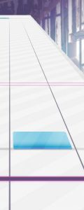 | 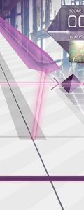 | 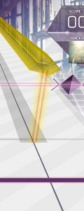 | 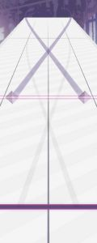 | 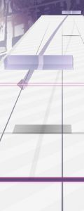 | |||
| 纷争侧 | 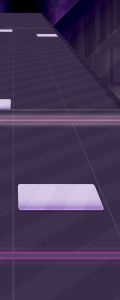 | 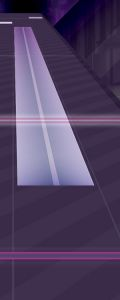 | 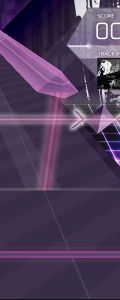 | 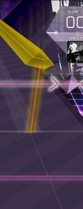 | 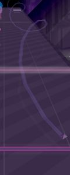 | |||
| 番茄技能 | 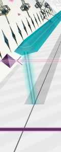 | 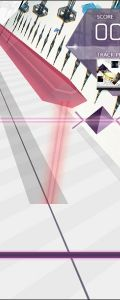 | 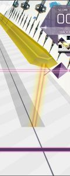 |
| 特殊物件 | 示意 | 说明 |
|---|---|---|
| 绿音弧 |  |
目前仅存在于愚人节纷争侧谱面 Red and Blue and Green [FTR]、0xe0e1ccull [FTR] 以及常驻纷争侧谱面 Your Best Nightmare [BYD] 中。 |
| Designant. 音轨 |  |
目前仅存在于 Lucent Historia 曲包中异像谱面 Lament Rain 以及 Designant. 中。 |
Arcaea的判定分为“纯粹”（Pure）、“模糊”（Far）与“流失”（Lost）三种，其中Pure分为大Pure和小Pure。
| 显示 | 名称 | 判定区间 | 效果 | 备注 |
|---|---|---|---|---|

|
大Pure | ±25ms以内 | 获得 (Pure 基本分 +1) 连击数 +1（获得理论值的必要条件） |
只要击中长条或音弧就一定是大Pure判定 |
| 小Pure | ±25ms 至 ±50ms | 获得 Pure 基本分 连击数 +1 |
如果开启设置中的“显示过快/过慢”，连击数上方会显示 Early/Late 大Pure、小Pure的叫法仅为称呼方便，实际游戏中 Pure 的显示大小没有区别 |
|

|
Far | ±50ms 至 ±100ms | 获得 (Pure 基本分 ÷2) 连击数 +1 |
- |

|
Lost | ±100ms 内未击中 或 提前 100-120ms 击中 | 不得分 连击数清空 |
- |
提前 120ms 以上的点击将不会有任何结果。
如果连击数（Recall）大于 1，则会在判定平面的中心显示连击数。[17]
如果 FR/PM 指示灯开启，在谱面开始时会显示两个指示灯：
FR（Full Recall）指示灯（紫色，左侧）
PM（Pure Memory）指示灯（蓝色，右侧）。
如果游玩过程中出现一个 Far 或 Lost 判定，PM 指示灯将消失；出现一个 Lost 判定，FR 指示灯将消失。
计分方式分为基本分和判定附加分两部分：
- 基本分：满分为10000000[18]，单个Note的分数为(10000000/谱面Note总量)，游玩过程中每个Pure获得完整的分数，Far获得一半分数，Lost不得分。
- 判定附加分：每个大Pure会额外加1分，其他判定均不加分，附加分无上限。拿到所有附加分时，即成绩为（10000000+谱面Note总量）时的成绩为理论值。
举例：Tiferet
[FTR]共有1086物量。某玩家在一次练习的时候打出了984大Pure，97小Pure，3Far，2Lost的成绩。忽略大Pure+1分时，Pure每个音符得分为9208.103，Far每个音符得分为4604.052，Lost每个音符得分为0，总分即为(984+97)×9208.103+3×4604.052+2×0+984=9968755.639
显示得分为9968755（向下取整）[19]。
Pure Memory的判定标准为无Far/Lost判定，而非分数超过10000000。[20]
依据曲得分，有以下不同的评级，均于选曲页面中显示为相应的图标。分数向下取整。
| 评级 |  |
 |
 |
 |
 |
 |
 |
|---|---|---|---|---|---|---|---|
| 对应分数区间 | 9900000或以上 | 9800000～9899999 | 9500000～9799999 | 9200000～9499999 | 8900000～9199999 | 8600000～8899999 | 8599999或以下 |
回忆收集条（Recollection Gauge）简称"回忆条"，为游玩界面左侧竖置的的窄条。在不同的回忆条类型下，它的数值（回忆率，Recollection Rate）代表着不同的通关条件。
回忆系数
[参考 1]
每个谱面存在一个固定的"回忆系数"，这个系数和谱面物量与难度相关。
当Note出现判定时，游戏将会依据判定对回忆条增减与回忆系数相关的数值，这个数值也会因为搭档技能的不同而存在变动。
回忆系数的计算方法如下：
| 条件 | 计算公式 |
|---|---|
| 物量 < 400 | 80 ÷ 物量 + 0.2 |
| 400 ≤ 物量 < 600 | 32 ÷ 物量 + 0.2 |
| 物量 ≥ 600 | 96 ÷ 物量 + 0.08 |
若谱面等级 ≥ 11级，回忆系数将额外×0.8。[21]
以下是一些计算例：
- dropdead [PST]物量为44，故此谱面回忆系数为2.018181；
- Diode [PRS]物量为472，故此谱面回忆系数为0.267796；
- Phantasia [FTR]物量为952，故此谱面回忆系数为0.180840；
- Fracture Ray [FTR]物量为1279，故此谱面回忆系数为0.155058...×0.8=0.124046。
通关类型
根据回忆条的难度，玩家通关时会获得不同的通关类型。
-
若游玩一张谱面时所有音符都为Pure（无论是大Pure还是小Pure），将得到"Pure Memory"（纯净回忆）评价，简称"PM"。
- 通关类型覆写为PM并获得标志

- 通关类型覆写为PM并获得标志
-
若游玩一张谱面时没有音符得到Lost并且满足通关条件，将得到"Full Recall"（完整重现）评价，简称"FR"。
- 通关类型覆写为FR并获得标志

- 通关类型覆写为FR并获得标志
- v5.10.0版本后，达成FR或PM评价瞬间（最后一个音符判定完毕后），画面底部会闪烁一阵对应颜色的紫色（FR）或蓝色（PM）的光芒和粒子效果作为提示。
-
未能达成以上条件但满足通关的条件，将得到"Track Complete"评价，即标准的"通关"。
- 根据使用回忆条的通关类型不同显示为不同颜色的"C"标志。
-
未能满足通关条件，将得到"Track Lost"评价，即"通关失败"。
- 通关类型覆写为TL并获得标志

- 通关类型覆写为TL并获得标志
并不是所有搭档都满足上述条件，参见后述。
普通难度回忆条，通关类型为Normal Clear。
| 主体 | 初始回忆率 | 回忆率增减 | 通关条件 | 通关标志 | 覆写Clear |
|---|---|---|---|---|---|
| Normal | 0 |
Pure + 1 × 回忆系数 Far + 0.5 × 回忆系数 Lost - 2 |
回忆率 ≥ 70 | Easy Clear |
说明
回忆率首次达成通关条件时会播放音效作为提示
搭档没有任何特殊回忆条说明时即使用此种回忆条，将任意搭档封印也会强制使用Normal回忆条。
| 变体 | 回忆率增减 | 说明 |
|---|---|---|
| Zero |
Pure + 1 × 回忆系数 Far + 0.5 × 回忆系数 Lost - 100 |
光（Zero）所使用的回忆条 获得Lost判定直接清零回忆率 在Beyond Challenge中不影响Far导致的回忆率扣除量 |
| Ether Strike Anomaly | 保持主体 |
触发解锁Fracture
Ray的异象时所使用的回忆条 每隔一定时间自动扣除一定值的回忆率 该回忆条详细见Fracture Ray |
| 正常数值变体 | - | 咲弥、榛名、露娜 & 美亚、迷尔、凛可、咲姬、纺、千夏 |
简单难度回忆条，采用简单难度的搭档即使用此种回忆条，通关类型为Easy Clear。
以Easy难度通关的歌曲不计入通关曲目数量[22]，但可以被解锁需求识别。
| 主体 | 初始回忆率 | 回忆率增减 | 通关条件 | 通关标志 | 覆写Clear |
|---|---|---|---|---|---|
| Easy | 0 |
Pure + 1 × 回忆系数 Far + 0.5 × 回忆系数 Lost - 1.2 |
回忆率 ≥ 70 | - |
说明
回忆率首次达成通关条件时会播放音效作为提示
| 变体 | 回忆率增减 | 说明 |
|---|---|---|
| Overflow |
EASY 光（Fracture）所使用的回忆条 在达到100回忆率后会变为Hard难度回忆条的计算方式和通关条件，且会播放一次与达到通关条件时不同的特殊音效 但无论是否触发困难模式，通关类型均为Easy Clear |
HARD 与正常Hard条相同 |
| Grade |
初始回忆分数为理论值 Pure - 0 Far - 判定扣除分 Lost - 判定扣除分 |
DORO*C未觉醒时所使用的回忆条 回忆率被修改为回忆分数，回忆条会显示当前回忆分数的评级 评级低于AA（9500000）后视为Track Lost 如果游玩时达成了获得Full Recall的条件，则通关类型固定为Full Recall |
| 正常数值变体 | - | 爱托 & 露娜（冬日）、奈美（暮光） |
困难难度回忆条，采用困难难度的搭档即使用此种回忆条，通关类型为Hard Clear。
| 主体 | 初始回忆率 | 回忆率增减 | 通关条件 | 通关标志 | 覆写Clear |
|---|---|---|---|---|---|
| Hard | 100 |
Pure + 1 × 回忆系数 Far + 0.5 × 回忆系数 Lost： 回忆率 ≥ 40：-9 40 > 回忆率 ≥ 30：-(24 - 减少前回忆率 ÷ 2) 回忆率 < 30：-5 |
回忆率＞0 |
Normal Clear Easy Clear |
说明
回忆率低于30时，屏幕边缘会闪烁红光警告回忆率过低
回忆率低于0时会立刻中断游玩，并获得Track Lost评价
| 变体 | 回忆率增减 | 说明 |
|---|---|---|
| Life20 |
初始可Lost数为20 Pure - 0 Far - 0 Lost - 1 |
潘多拉涅墨西斯（MTA-XXX）所使用的回忆条 回忆率被修改为可Lost数，回忆条会显示当前的可Lost数 当可Lost数归0时会立刻中断游玩，并获得Track Lost评价 |
| Life60 |
初始可Far/Lost数为60 Pure - 0 Far - 1 Lost - 1 |
不来方永爱所使用的回忆条 回忆率被修改为可Far/Lost数，回忆条会显示当前的可Far/Lost数 当可Far/Lost数归0时会立刻中断游玩，并获得Track Lost评价 由于dropdead [PST]难度物量不足60，使用此搭档游玩此曲目时不会Track Lost |
| Tempest |
Pure + 2 × 回忆系数 Far + 回忆系数 Lost - 18 |
对立（Tempest）所使用的"风暴收集条" 回忆条根据一段时间内累计的判定获得持续增加或减少的回忆率变化量 该回忆条变化规律详细见搭档技能描述 |
| Tempestissimo Anomaly | 保持主体 |
触发Tempestissimo异象时所使用的回忆条 回忆条根据一段时间内累计的判定获得持续增加或减少的回忆率变化量 该回忆条详细见Tempestissimo |
| Fatalis | 保持主体 |
光（Fatalis）所使用的"宿命收集条" 回忆条存在一个会随着Pure数变化的下限，低于下限时回忆率立即归零并获得Track Lost评价 回忆率接近回忆率下限时屏幕边缘并不会闪烁红光 该回忆条的"下限"机制详细见搭档技能描述 |
| Grade |
初始回忆分数为理论值 最低回忆分数为该谱面最佳成绩评级对应最低分数，如果个人最好成绩≤9499999，则使用9500000代替 Pure - 0 Far - 判定扣除分 Lost - 判定扣除分 |
DORO*C觉醒时所使用的回忆条 回忆率被修改为回忆分数，同时回忆条会显示当前回忆分数的评级 评级低于AA（9500000）后视为Track Lost 回忆分数低于最低回忆分数时，回忆条评级会根据当前分数自动计算，同时立刻中断游玩，并获得Track Lost评价 回忆分数接近最低回忆分数时，屏幕边缘会闪烁红光警告回忆分数过低 |
| 正常数值变体 | - | 轩辕十四（MDA-21）、依莉丝（夏日）、阿莱乌斯、希尔、伊莎贝尔、刹那、依莉丝（觉醒）、紫黑、露恩（觉醒）、洞烛（至高：第八探索者） |
在段位挑战模式中强制使用的回忆条，基于Hard模式设计。
使用此回忆条在段位通过曲目时会获得Hard Clear，但在曲目的排行榜中会显示为Easy Clear。
该回忆条详细见段位挑战页面。
| 主体 | 初始回忆率 | 回忆率增减 | 通关条件 | 通关标志 | 覆写Clear |
|---|---|---|---|---|---|
| Course | 100 |
Pure + 1 × 回忆系数 Far + 0.5 × 回忆系数 Lost： 回忆率 ≥ 40：-10 30 ≤ 回忆率 < 40：-(24 - 减少前回忆率 ÷ 2) 回忆率 < 30：-5 |
回忆率＞0 | - | - |
说明
回忆率低于30时，屏幕边缘会闪烁红光警告回忆率过低
回忆率低于0时会立刻中断此次段位挑战，并获得Course Failed评价
在世界模式失落章中，所有触发了Beyond
Challenge的搭档，其Far判定会扣除Lost判定一半的回忆率。
在2023年愚人节期间，使用潘多拉涅墨西斯（MTA-XXX）和不来方永爱在结算界面"重试"愚人节谱面，会出现回忆条为Normal回忆条但回忆率不上涨的bug。此bug可导致即使判定全部为Pure，但由于回忆率未达到70从而结算判定为Track
Lost。
当前已知可以在游玩中全连Track Lost的搭档为奈美（暮光）、不来方永爱、轩辕十四（MDA-21）。
迷尔在修正参数前可在常规游玩中Track Lost，参见在普通游玩。现已修复
在Beyond挑战中Track Lost的示例：Beyond Challenge游玩
目前已知可以放置（即全部Lost）通关的搭档仅有不来方永爱（可以放置通关的曲目仅有dropdead [PST]）。
残片是免费获得的虚拟代币，通过游玩曲目或世界模式奖励台阶获得。残片可以离线获取与使用，但不能通过云端同步转移至其他设备，卸载游戏会导致残片丢失。
当残片显示数量将超过9999时，将以残片显示值下方的一条短横线替代9999残片，而残片显示值则显示余下的残片数，即实际残片数=短横线个数 × 9999。短横线最多能有2条，因此最大能存储的残片上限为 9999 × 3 =29997，当实际残片量达到该最大值时，残片显示值底色将变为紫色。点击残片显示位置可以获取当前的实际残片量具体数值。
残片可用于：
- NS版：解锁曲包与曲目，升级搭档
- 移动版：解锁曲目，扩充好友位，购买世界模式体力、LegacyMap Play+残片加成、失落章残片加成。
每次游玩谱面后都会获得一定数量的残片，分为"游玩"、"通关"、"精彩展现"、"初次通关"、"搭档"和"LINK PLAY"部分，最终获得的残片数量为：上述所有部分之和 × 搭档Frag值 ÷ 50。
在NS版中，曾经在世界模式游玩不会获得残片，但是从2.0.0版本更新开始，可以获得残片。
封印搭档或游戏处于离线及游客模式下，Frag值固定为50
"游玩"奖励为Track Lost且分数至少为5,500,000时获得的奖励
"通关"奖励为Track Complete/Full Recall/Pure Memory时获得的通关奖励
"精彩展现"奖励为Full
Recall/Pure
Memory时获得的额外奖励
以上几项奖励均受谱面难度和等级影响，具体计算方式如下所示（计算结果向下取整）：
- 游玩奖励：等级 ÷ 1.2[23] 与 1 的较大值（？视为等级0）
- 通关奖励（Track Complete）：游玩奖励 + 8 + 难度（PST：0，PRS：1，FTR/ETR：2，BYD：3）
- 通关奖励（Full Recall / Pure Memory）：8 + 难度（PST：0，PRS：1，FTR/ETR：2，BYD：3）
- 精彩展现（Full Recall）：游玩奖励 × 2
- 精彩展现（Pure Memory）：游玩奖励 × 2.7
具体数值见下表[参考 2]
| 谱面等级 | 各等级对应残片奖励 | |||||||||
|---|---|---|---|---|---|---|---|---|---|---|
| 1/2/? | 3 | 4 | 5 | 6/7/7+ | 8/8+ | 9/9+ | 10/10+ | 11/11+ | 12 | |
| 游玩奖励 | 1 | 2 | 3 | 4 | 5 | 6 | 7 | 8 | 9 | 10 |
| 通关奖励 | 未FR/PM时： | |||||||||
| PST | 9 | 10 | 11 | 12 | 13 | - | - | - | - | |
| PRS | - | 11 | 12 | 13 | 14 | 15 | 16 | - | - | |
| FTR/ETR | 11 | - | - | - | 15 | 16 | 17 | 18 | 19 | |
| FR/PM时 | PST：8，PRS：9，FTR/ETR：10，BYD：11（无视谱面等级） | |||||||||
| 精彩展现(FR) | 2 | 4 | 6 | 8 | 10 | 12 | 14 | 16 | 18 | 20 |
| 精彩展现(PM) | 2 | 5 | 8 | 10 | 13 | 16 | 18 | 21 | 24 | 27 |
| PM时总和[24] | 10 | 14 | 17 | 19 | 23 | 26 | 29 | 32 | 35 | 38 |
"初次通关"奖励为每个谱面首次达成非Track Lost评价时所获得的奖励，固定为10残片
在Nintendo Switch版Arcaea中，如果已经在任意控制方式中获得过该谱面的"初次通关"奖励，则无法在其他控制方式中再次获取该谱面的"初次通关"奖励
"搭档"为部分搭档拥有的技能产生的残片数量影响，可正可负，但通常为正向奖励残片。
这些搭档的影响方式不尽相同，具体数量请在各搭档页面或搭档数据简表中查看。
"LINK
PLAY"奖励残片为在Link Play房间内2人以上完成游玩时给予的奖励，计算方式如下：
Link Play奖励值 = (游玩奖励 + 通关奖励 + 精彩表现) × 全员连击奖励 × 游玩人数
全员连击奖励是基于所有玩家连击状态给予的奖励，其中：
未达成全连：×0.1，Linked Full
Recall：×0.134，Linked Pure
Memory: ×0.167
游玩人数是房间内玩家人数给予的奖励（掉线的玩家不计算）：
1人：×0，2人：×1，3人：×2，4人：×3
"STAFF LINK" 为在2024/09/13-2024/09/14期间，玩家进行公开Link Play时匹配到Lowiro的官方人员所给予的额外奖励，此残片奖励固定为100。
世界模式地图中也存在残片奖励台阶，经过这些台阶时会获得对应数量的残片。
记忆源点（Memory）是游戏内通过充值购买获得的虚拟代币，一般可以用来获取付费曲目或辅助游玩世界模式。记忆源点与账号绑定，因而只能在线获取与使用，但可以自动同步至所有该账号下的设备。
购买方式：
点击记忆源点数量图标即可在游戏内或前往Arcaea官方网站进行购买，可用的支付方式包括两大类：
- 通过Google Play和App Store应用内购买，可用购买项目为：7元/100记忆源点，34元/510记忆源点，68元/1020记忆源点。
- 通过Arcaea官网账户管理系统购买，固定为34元/550记忆源点，支持34元，68元，136元三档购买项。
根据当前货币不同，价格可能存在微调，以给定价格为准。
此外，自2020年起lowiro会在每年元旦为当日登录Arcaea的玩家发放100记忆源点，领取时间限制为元旦当日。
记忆源点可用于：
此章节的均为在线功能，需要注册并登录Arcaea账号，并通过点击主界面的"网络"（地球标志）按钮进入。
注册与登录
未登录时，"网络"界面显示为注册或登录账号。
- 需要使用邮箱注册并验证后才能完成注册，此邮箱将会用于密码找回（届时会由"noreply@lowiro.com"发送密码重置邮件）。
- 可在官网账号管理系统登录后修改用户名（每次需支付100记忆源点）、管理原声专辑电子版资源、充值记忆源点、在Arcaea Online查询个人数据等。
- 同一账号仅可同时在一台设备上游玩Arcaea，且24小时内不可登录3台以上的设备，否则将会触发封禁。
- 根据封禁次数，单次封禁将持续1天、3天、7天、15天、31天。
- 根据Arcaea服务条款，不得共享账户或持有多个账户（开小号），请确保你仅使用由自己注册的一个账户。
- 同一账号仅能同时在两台设备上保持登录状态。登录第三台设备后，前两台设备中较早登陆的设备将会自动退出登录。
云端同步
v1.1.2起网络功能增加"云端同步"，可以将存档上传到云端保存，并在另一台设备下载存档以完成存档转移。
- 云存档功能并不推荐用于备份。
- v1.5.0起，云端同步不再同步残片。
- v1.6.1起，结算界面左上部增加快速同步按钮，点击即可快速同步，若显示为灰色即同步完成，若显示为红色则同步失败。
- v3.2.3起，存档之间存在冲突时将弹出存档确认界面，玩家可根据本地存档和云端存档的详细数据（包括通关曲目数、云端存档上一次上传时的设备名和上传时间）选择要保留的存档。
同步内容
云端同步的内容包括：
- 歌曲的解锁情况（包含异象等特殊解锁方式的歌曲）；
- 歌曲的本地成绩与通关状态；
- 故事模式的解锁进度；
- 与部分歌曲相关的世界模式地图解锁情况。
云端同步的内容不包括：
- 游戏设置（语言，音符流速，偏移率等）；
- 残片数量；
- 收藏的搭档和Favorites所收藏的曲目。
以下内容无需云端同步，与账号自动绑定和更新：
同步机制
当玩家登录一台设备并进行云端同步后：
-
若云端没有存档（即这个账号第一次执行云端同步）：
- 若本设备没有任何数据，则此功能无效；
- 若本设备有数据，则将本地存档上传至云端（第一次上传）。
-
若云端已有存档：
- 若本设备没有任何数据，则从云端下载存档；
- 若本设备有数据：
- 若云端存档的设备与本设备相同，则将本地存档上传至云端；
- 若云端存档的设备与本设备不同，则将弹出存档确认界面选择要保留的存档，保留的存档将会覆盖另一个存档，此操作不可撤销。
好友（关注）系统
通过添加好友可以关注Ta的最近游玩与单曲成绩。
- 点击主界面的"网络"（地球标志）按钮即可在画面右侧查看好友列表。
- 可以查看好友用户名、设定的显示搭档、潜力值与最近一次游玩成绩及记录时间。列表按最近游玩成绩的记录时间最近到最远排列。
- 被添加的好友将会加入你的单曲好友排行榜中，从而可以在选择单曲时查看同谱面的好友成绩。
- 点击左侧"添加"按钮输入9位ID来添加好友，你也可以在上方确认你自己的ID。
- 默认好友上限为10个，可以通过支付残片增加好友上限。目前好友上限最多可以增加到30个，总计需要34000残片。
| 好友位数量变化 | 每个好友位所需残片数量(个/上限增加1位) |
|---|---|
| 10→12 | 500 |
| 12→14 | 1000 |
| 14→16 | 1500 |
| 16→30 | 2000 |
注意事项：
- 加好友是单向的，你加Ta≠Ta加你。
- 双向好友会在好友右侧显示"相互关注"的标志。
- 当添加好友时输入的ID分别为000000001和000000002时，好友列表中分别会新增名为Hikari和Tairitsu的好友，搭档分别显示为觉醒后的光和对立，默认显示相互关注，潜力值显示为6.16，不显示最近游玩记录。
- 如果你输入了自己的ID，添加时会提示"你不能加自己为好友 ;_;"。
- v5.10.0更新以后，可以邀请双向好友加入自己所在的Link Play房间。
个人档案卡
展示个人资料卡。
若要使用在线功能（如世界模式、游玩付费曲目、Link Play等），你需要注册并登录Arcaea账号。
Link Play
参见：Link Play
移动版v3.10.0新增Link Play功能，该功能支持最多4名玩家同时游玩一首曲目，并且在游戏中实时显示各自的分数差。
v5.10.0后该功能得到重大更新，具体内容请在对应页面查看
段位挑战
参见：段位挑战
移动版于v4.0.0新增段位挑战功能，玩家可选择不同段位的挑战，挑战中连续通关固定的4首曲目可获得背景框等奖励。
Arcaea Online
Arcaea Online为lowiro官方提供的网页版Arcaea游戏数据查询系统。
只要已经注册了账号并登陆游戏，即可通过浏览器登陆Arcaea官网以访问Arcaea Online。
Arcaea Online包括以下免费功能：
-
档案：显示个人资料卡（包括当前搭档、潜力值、各难度曲目通关数、用户名与账户ID），登录Arcaea Online后的主页面。
- 可在此处切换要显示的场景。
- 可选择的场景与游戏内数据同步，但默认选择"无央的决裂"，无论是否在游戏中解锁过。
- 此功能也在部分其它页面中可用。
-
好友：查看和管理好友列表（参见上述好友系统）。
- 因为增加好友上限需要读取游戏残片数据，因此无法增加好友上限。
- 搭档：查看和选择搭档，确认持有道具数量（以太之滴、觉醒用核心、次元结晶等）。
- 排行榜：选中某个难度后（默认为FTR），可确认自己在该难度下的曲目总分，以及该分数在世界范围内的排名（10000名以外则不显示）；默认显示该难度下世界前50名的排行榜，可通过点击"前50"图标切换至自己排名周围共50名玩家的排行榜位置。[26]
通过支付200记忆源点/30天的订阅费用，还可解锁额外内容：
订阅者游戏内权益（可在"订阅"页面查阅）：
-
世界强化：进行世界模式游戏时获得额外步数加成。
- 基础加成为20%，每连续订阅一次提升5%，上限30%加成；订阅中断后重置加成提升状态。
- 加成对Beyond章节/陷落章也生效。
- 自定义名片显示：可以选择游戏中显示于顶部头像和名称上的背景框。
-
月度权益礼：每月可选择下列三种礼物中的一个获取。
- 随机解锁一首尚未获得的Memory Archive曲目；
- 2 源韵强化兑换券；
- 20 以太之滴。
- 源韵强化兑换券有效期为14天。在拥有兑换券时，每次激活源韵强化时将优先消耗一张兑换券。
- 如果玩家已经获得Memory Archive所有遵从单曲计价规则的曲目，则在赠礼界面中"随机曲目"一项会被去除。
- 如果玩家在当月未领取礼物，则会获得20 以太之滴。
"排行榜"解锁好友排行榜。
- 解锁"分数"页面：确认自己的单曲成绩（评级、得分、PM/FR状态），点击曲目封面可展开详细信息（年均游玩次数、最好成绩判定统计、单曲排行榜）。
- 解锁"潜力值"页面：确认自己的潜力值变动情况曲线（支持1周/1月/1年/3年/5年内统计），以及最高的30个游玩成绩与近期最佳的10个游玩成绩（即best30与recent
best10）；支持导出最高30个成绩为图片。
- 生成的图片背景即为玩家选择的场景。
订阅剩余时间可在档案页面右上角查询，也可在订阅管理中查询失效日期。
订阅支持自动续费：记忆源点足够时，每30天自动扣费续订。
v3.6.0新增了与潜力值无关的全新排名系统，并为该排名中世界前200的玩家增添特殊边框。
排名机制
排名算法根据所有FTR、ETR、BYD难度谱面的单曲得分相加排名。
单曲得分由分数部分和准度部分组成，每个部分的计算方式如下：
- 分数部分基于游玩分数计算，自9900000起从0开始线性增加，至10000000达到上限1
- 准度部分统计大Pure判定数在总物量中的占比，自90%起从0开始线性增加，至99.5%达到上限1
在得到两个部分的参数后，按照如下公式得到单曲得分：
（准度部分+分数部分 × 3） × 定数
根据该算法，未达成PM的单曲内一个Far判定将等价于额外的14.25个小Pure判定，一个Lost判定将等价于额外的28.5个小Pure判定。
重置存档
此功能已被移除。
v5.3.0前点击云端同步，云端存档将被清空
警告：若您从未上传过本地数据，该操作将极其危险且无法撤销！
尝试此操作前请务必上传本地数据！Arcaea中文维基不对您误操作造成的数据丢失承担任何责任。
在游戏内"其他"界面点击左上角 10 次将弹出重置存档的确认对话框（由于是隐藏功能所以皆显示英文）。
确认重置后，当前设备上的本地成绩、歌曲解锁/通关状态和故事解锁进度将被全部清除和重置为初始状态。
与账号相关的在线数据（如登录状态、已购买内容、已上传的在线成绩与潜力值）、残片数量和游戏设置不会被清除。省去了卸载重装带来的麻烦
于v5.3.0开始，如果玩家重置存档之后立即云端同步，游戏仍能成功从云端读取数据，云端上的所有数据还会回来，因此若未上传本地数据至云端，尝试本操作后本地数据将清除且无法挽回。
v5.8.0（疑似）更新后某一天，此功能被移除，点击已经不会触发任何弹窗。
Arcaea一般有三种常见指法。
双手拇指游玩
该指法主要适用于使用手机或其他小型设备游玩Arcaea的玩家。
双手横持并托举设备，使用拇指进行游戏，在少数需要辅助指的谱面中可额外使用两手食指。
优点：无需支架，可于大部分的情况下进行游玩。
缺点：对于跨度较大的键位处理的时候会有一定困难（一个典型例子就是Dreamin' Attraction!!的反复大出张）。
拇指玩法示例：BengaleeHS的拇指Grievous Lady手元
双手食指游玩
该指法主要适用于使用iPad或其他大型设备游玩Arcaea的玩家，也有部分使用手机等小型设备的玩家使用双手食指游玩。
将设备平置于一稳定平面上，使用双手食指进行游戏，在少数需要辅助指的谱面中可额外使用拇指或中指（由具体情况决定）。
优点：能够相对容易的处理各种键型；可较为容易的发展为多指游玩。
缺点：游玩地点受到限制。
如果你是使用小型设备且使用此种指法的玩家，在游玩的时候请注意做好防滑工作，避免设备滑动或飞出桌面，导致影响游玩或设备损坏。
食指玩法示例：h1r的食指Cyaegha手元
多指游玩
该指法主要适用于使用iPad或其他大型设备游玩Arcaea的玩家，绝大多数的Ranker都是这种玩法。
将设备平置于一稳定平面上，使用双手所有的手指进行游戏（但绝大多数情况下都主要使用双手的食指和中指，处理部分简单配置时通常都仅使用双手食指）。
优点：能够容易的处理各种键型，在高难度谱面的高难度段中能够有效的提高准度。
缺点：上手难度极高，如无足够音游基础不建议上手即使用此种指法。
多指玩法示例：Maintain的多指Grievous Lady手元
注释
- 目前没有既具有Eternal又具有Beyond难度的曲目
- 在Infinite Strife,和Arcana Eden的谱面中出现了一种特殊的天键，同时带有一段黑线的引导。另外，在Designant的异象谱面中出现了特殊的红色天键，并且一部分超出了梯形界。
- 愚人节谱面虽然使用Future难度，但是并不遵循Future难度的谱面规则，并且谱面等级为0（游戏中显示为？）
- 目前仅Good bye, Merry-Go-Round 、Manic Jeer、UNKNOWN LEVELS、To the Furthest Dream中出现了超界天键
- FTR/ETR也有个别谱面存在此现象，例如PRIMITIVE LIGHTS [FTR]与ALTER EGO [ETR]
- 目前仅有PRAGMATISM -RESURRECTION-，Vicious [ANTi] Heroism，Last | Moment / Last | Eternity
- 主线第一幕曲包Black Fate和Final Verdict中，BYD难度解锁前隐藏，需要达成特定条件后解锁；主线第二幕曲包Lucent Historia中，大多数BYD难度谱面未隐藏可以根据提示解锁，个别隐藏需要达成特定条件后解锁；Your Best Nightmare BYD是唯一的未隐藏且无需任何条件解锁的BYD谱面
- v5.3.0后出现了槽位隐藏机制，在对应地图的前置地图完成之前，其附加难度槽位将会被隐藏（例如Einherjar Joker，其BYD难度槽位需要先解锁Libertas的BYD难度谱面才能显示）。
- v6.2.0版本更新前与FTR在选曲界面共用一个列表，即选择FTR或ETR难度后，同一首曲目的FTR与ETR难度谱面会同时出现在列表中；
- 目前只有Pentiment、Testify和Arcana Eden的全难度谱面 [FTR]和HIVEMIND INTERLINKED [FTR]会有这种事件发生。
- 部分BYD难度谱面中出现过长条引导的音弧以及没有在左上角和右上角开始的音弧，同时Axium Crisis [FTR]、Heavensdoor [FTR]谱面中出现了结束时间在音弧开始时间之前1ms的音轨（没有音轨与音弧直接连接）
- 这种天键在刚刚被发现的时候一度以为这是需要手指滑动的Flick键 但是后来发现这仅仅就是特殊样式的天空单键
- 也就是触点y<0时或y>Sky Input高度时y坐标都会被修正至对应边界上，但在愚人节谱面中不对Arctap应用此效果（否则部分超界Arctap将无法判定）
- 消色侧的曲目使用光芒侧物件，但是这些曲目并不属于光芒侧。
- 即为对立 & 托凛的技能触发时的note显示
- 关于Pure基本分，参照计分方式
- 在极少数情况下，连击数为1也会显示
- 在解锁Fracture Ray的过程中击中Ether
Strike的结尾追加note时，基本分达到10000000后不会增加；
触发Tempestissimo的异象时每个note的分数按照触发前的分数计算，且基本分没有上限 - 实际游玩过程中也是按这公式，最终公式结果出来前，流程都是代入计算pure得分和far得分（可以理解为带入分数），再计算大pure的分
- 游戏内Note数量最大的是Testify [BYD](2221)，小于临界值2237，出现了一个Far判定得分依然会小于10000000
- 6.0前原定级为11级（不包含）以下的回忆系数不会额外×0.8
- 基于此，在Arcaea Online或游戏内档案查看各难度曲目通关数时，可能会出现Clear数目低于Full Recall数目的情况。
- 此处1.2为单精度浮点数，实际值为1.2000000476837158203125
- 按最高难度计算，不包含FTR?
- 包括：
Testify, Arcahv, Loveless Dress, Last, Callima Karma, Designant, 全难度谱面和除 Infinite Strife, World Ender, Pentiment, Arcana Eden, Rays of Remnant, Renegade, Breach of Faith, Lament Rain, Your Best Nightmare, 外的所有BYD难度谱面 - 默认为自己排名向上24名到向下25名，如果在排行榜边缘（即前24名或9976-10000名）则相应移动显示的排名使得排行榜仍显示50名玩家。如果排名在10000名以外，那么会显示9952-10000名的成绩，并在最后列出玩家的成绩。
参考
- 算法参考：GitHub Gist
- 此处参考了JPwiki，见JPwiki对应页面